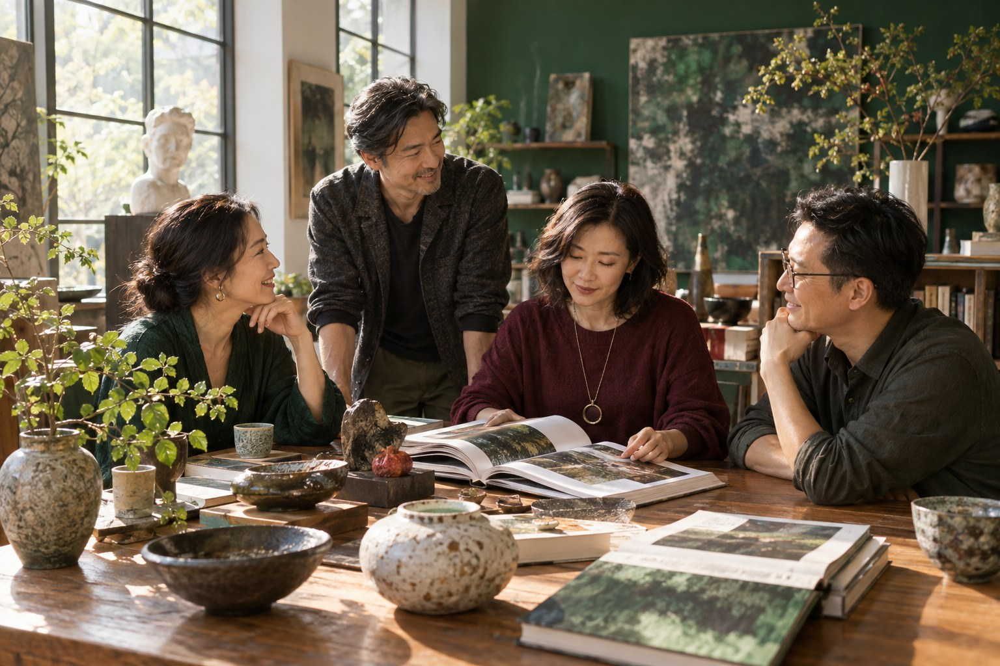

坐下来，聊聊近况
一杯茶、一顿饭、一段没有标准答案的交流。分享育儿，也聊工作、兴趣和自己最近的心情。
C+ 家长沙龙 · 给大人的成长与相聚
兼具学习与生活的家长质感社交圈层。
在这里相聚、学习，也一起享受生活。
认识谈得来的家长朋友，
让自己的身心灵，拥有更开阔的世界。

面对未来，先放下急着改变孩子的目光，
让自己拥有理解变化、接纳差异的能力。
每个孩子都有不一样的天赋，发现它，需要家长用不一样的眼光。我们也有需要被照顾的感受、值得被听见的心愿，以及尚未展开的人生。大人有光社邀请你，把一部分注意力带回自己：学习、探索、感受美，也重新选择怎样生活。
家长的成长，有属于自己的价值。
在这里，一起把日子过得有意思
带着好奇心来，也可以只为开心而来。
从一次相遇，慢慢成为彼此生活里的朋友。
一杯茶、一顿饭、一段没有标准答案的交流。分享育儿，也聊工作、兴趣和自己最近的心情。
在家长圈、引导课程与主题分享里，理解自己，交换经验，把新的眼光带回日常。
一起看展、听音乐、走进自然，或动手做点喜欢的事。让轻松与快乐，也成为相聚的理由。
从共同兴趣到真实对话，认识其他家长。下一次相聚时，多一个可以一起笑、彼此倾听的朋友。
我们的相聚想象，将随各地伙伴与参与者的兴趣逐步展开。
02 / 三种相遇，同一段成长
从真实的关系出发，
走向更开阔的自己。
在关系中看见自己
把教育焦虑、亲子冲突、放手与界限带进一个可以倾听、分享和练习的空间。从理解需要与恐惧，到接纳自己、重新建立关系。
线下相聚＋线上同行：结合面对面的交流与线上持续支持，让生活中的实践有机会被分享、回顾。
节奏规划中：目前考虑每月一次线下聚会、每两周一次线上聚会。具体频率、时长与参与人数将结合当地安排和成员需求确认。
从惯性反应走向自主创造
从每天的行动与反应进入，探索情绪背后的需要、核心恐惧和限制性信念。看见更多可能，让新的理解成为新的行动。
让美与对话走进日常
以美学、艺术与文化为主轴，透过嘉宾分享、访谈和交流，认识不同领域的人，也让自己的感受力与生活视野慢慢打开。
一本书、一件作品、一段地方记忆，都可以成为相遇的起点。结合书店、画廊、文化空间或社群的特色，共同策划单场或系列交流。
03 / 沙龙核心 · ARC 家长圈 × RECODE
由江宜汾 Konya 带领
持续同行，把新的理解带回生活。
已经很努力学习沟通，
却还是在担心、催促与冲突中感到疲惫？
你可以带着真实的困境来到这里。ARC 家长圈是大人有光社的重要核心之一：在持续相聚的小团体里，家长彼此倾听、分享与支持，从理解自己的反应开始，慢慢找回与孩子之间的信任，也给自己一份照顾。
家长圈提供持续练习与同行的空间；ARC × RECODE 帮助我们梳理行动、反应，以及背后的需要、恐惧与信念。每一次相聚，都让觉察有机会走进日常关系。
看见孩子做了什么，先观察眼前发生的事。
觉察自己的情绪与回应，理解是什么触动了自己。
看见更多选择，练习重新创造彼此的关系。
从需要走向恐惧与成长经验，再把接纳和新的选择带回关系。这些主题贯穿整个历程，依参与者的真实处境展开。
从冲突表面往下看，理解自己与孩子希望被理解、被支持的地方。
辨认焦虑、催促与控制背后的害怕，例如担心不够好、孩子受伤或失去掌控。
回看自己如何被对待、如何形成信念，以及这些经验怎样进入现在的教养与关系。
练习减少对自己的批判与责备，探索更贴近现实、更能支持自己的理解。
从控制走向信任，尝试新的表达、倾听与边界，让彼此拥有更多连接与空间。
把探索带进一次具体的回应
看见（See），为反应打开创造的空间。沿着六个步骤，梳理一个真实情境，并找到愿意尝试的小行动。
刚才发生了什么？我有什么感受，做出了什么反应？
这件事里，我真正在意、希望被照顾的是什么？
我害怕什么结果？它与过去的经验有什么关联？
拓展思想维度，开拓丰富的正向选择。
什么新的理解更贴近现实，也更能支持我的选择？
下一次，我愿意尝试哪一个具体而不同的回应？
在相聚中梳理困境，在日常尝试暂停、倾听或表达需要；下一次再一起回顾：哪里不同了？哪里仍然困难？让成长有时间，也有同伴。
线下相聚＋线上同行：结合面对面的交流与线上持续支持，让生活中的实践有机会被分享、回顾。
节奏规划中：目前考虑每月一次线下聚会、每两周一次线上聚会。具体频率、时长与参与人数将结合当地安排和成员需求确认。
C+ SALON / 年费会员计划
延续 C+ Salon 的会员制理念，
让学习与交朋友，成为生活里持续的陪伴。
缴交年费，加入一个持续相聚的生活圈。
从每周的交流、每月的共读，到每季与每半年的国内旅行，会员有固定的相聚节奏，也享有相关会员福利的专属折扣价格。
每周 1 次
留一段时间给自己，与熟悉的朋友聊聊近况，在交流与分享中彼此陪伴。
每月 1 次
围绕一本书或一个主题，一起阅读、交换观点，把新的理解带进日常生活。
每季 1 次
走出熟悉的日常，与社群伙伴一起探索国内不同地方的文化、自然与生活。
每半年 1 次
为半年留下一次共同出游的约定，在旅途中相互认识，也累积共同的回忆。
会员专属礼遇
相关会员福利提供专属折扣价格，具体适用项目、会员价与折扣幅度将随会员方案公布。
以上为会员计划的活动节奏；具体日期、地点、名额与报名方式依活动公告。
04 / 成长，发生在整个生活里
身体的舒展、心的连接、内在的安定。
从此刻最想靠近的主题开始。
认识情绪与需要，给喜欢的事留一点时间，练习照顾自己。
练习倾听、表达与彼此尊重，在家庭与关系中保有自己的位置。
在阅读、音乐、艺术与文化交流中，打开感官，也打开视野。
感受身体的节奏，在自然观察、休息与安静独处中整理自己。
探索金钱观、资源分配与个人价值，建立财务素养，让生活多一些选择。
练习提问、独立思考与面对变化，为自己探索下一阶段的方向。
这些是社群持续发展的主题方向，具体活动依实际策划与师资安排展开。
05 / 发起人
江宜汾 KONYA
从新闻采访到教育与成人学习，江宜汾持续关注：我们如何理解自己、听见他人，并在变化中拥有选择。
前台湾中视新闻主播、1221 未来教育发展协会创会理事长，《无边界学习》播客制作与主持人。透过家长圈、ARC × RECODE 引导及 C+ Salon，连接自我探索、关系与艺文生活。
从一次对话开始
想了解 C+ Salon 年费会员、活动安排与会员优惠，
或来聚会、学习、玩乐，认识新的家长朋友，
也欢迎中国各地的文化空间与社群伙伴，一起讨论适合当地的相聚。
微信：evachiang83